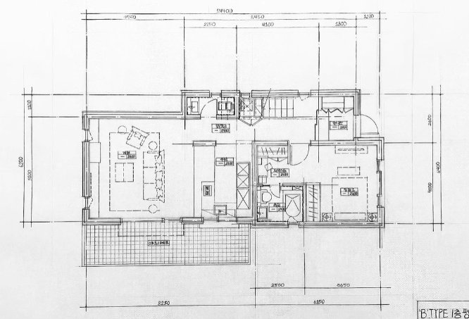

Drafting & Spatial Studies
제도와 공간 연구
가상 공간을 만들기 위해 시작한 제도 공부.

가상 공간을 만들려면 공간 설계자의 의도를 정확히 읽어야 한다고 생각해 제도를 시작했습니다. 여러 공법을 연습하고, 다양한 도면을 해석하고 직접 그리는 연습을 많이 했습니다.
어색함 없는 가상 공간은 정확한 도면 해석에서 시작한다는 걸 배웠습니다.
Drafting & Spatial Studies
가상 공간을 만들기 위해 시작한 제도 공부.

가상 공간을 만들려면 공간 설계자의 의도를 정확히 읽어야 한다고 생각해 제도를 시작했습니다. 여러 공법을 연습하고, 다양한 도면을 해석하고 직접 그리는 연습을 많이 했습니다.
어색함 없는 가상 공간은 정확한 도면 해석에서 시작한다는 걸 배웠습니다.